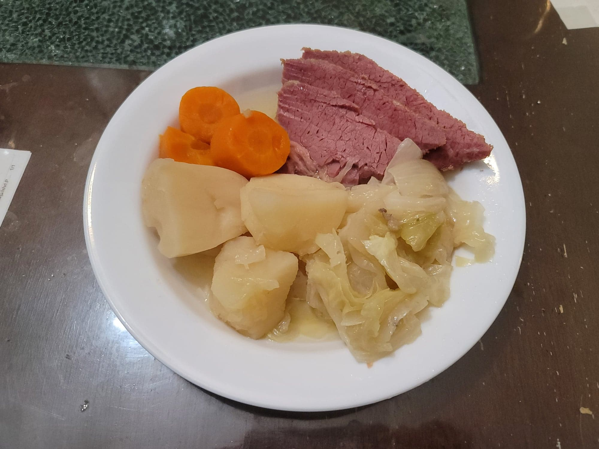

Corned Beef and Cabbage

Ingredients:
- 3-4 lb Corned Beef Brisket, with spice packet
- 1-2 Onions, cut into large chunks
- 2 1/2 - 3 cups Water, or as needed
- 3 cloves Garlic, smashed
- 2 Bay leaves
- 2 lb Potatoes, peeled and quartered
- 2 large Carrots, peeled and cut into large chunks
- 1 small Cabbage, cut into large chunks
Instructions:
- Place the onions into a slow cooker. Then place the corned beef and spice packet over the onions. Add water as needed to cover the beef. Then add in the garlic and bay leaves. Set the slow cooker to low and cook for 10 hours.
- 3 hours into cooking, add in the potatoes and carrots.
- 2 hours before the 10 hours are finished, add in the cabbage.
- When done cooking, remove the beef from the slow cooker. Let rest for 15 minutes and then slice to serve. Serve hot.